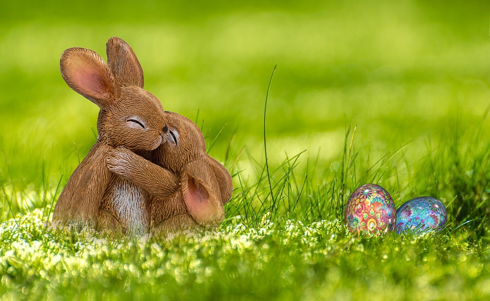
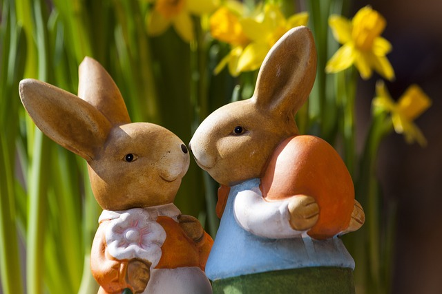
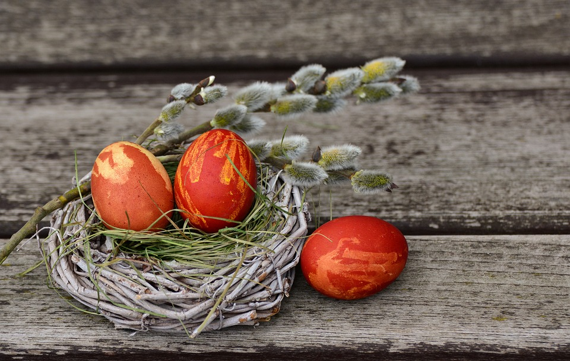
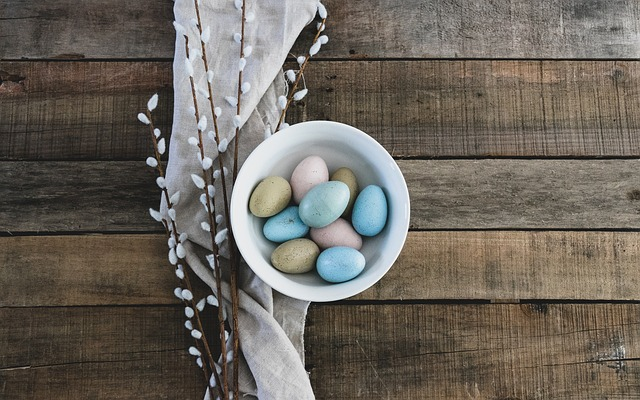
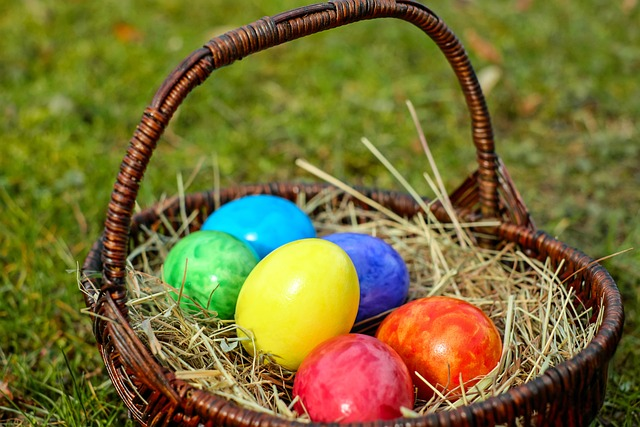
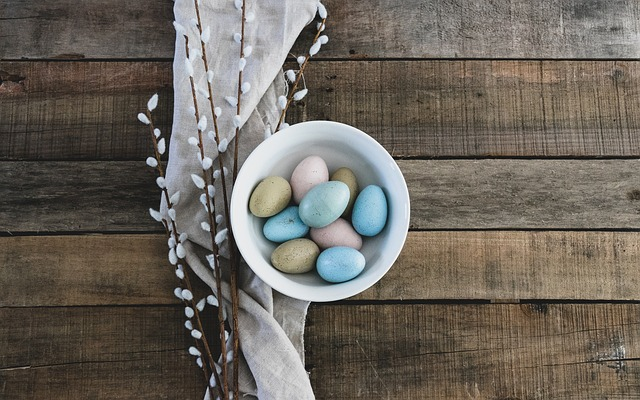
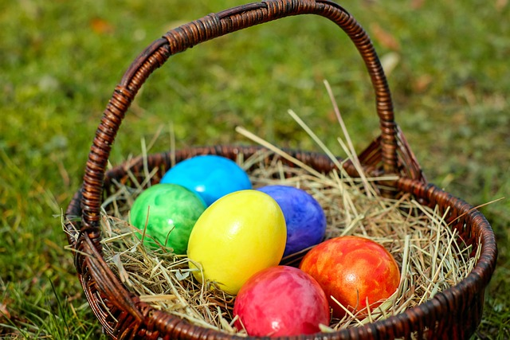
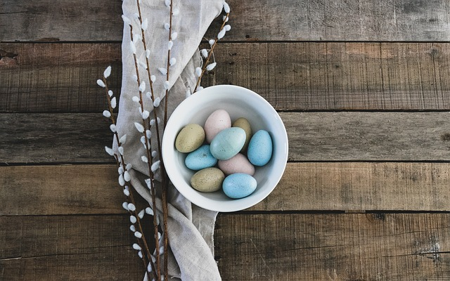
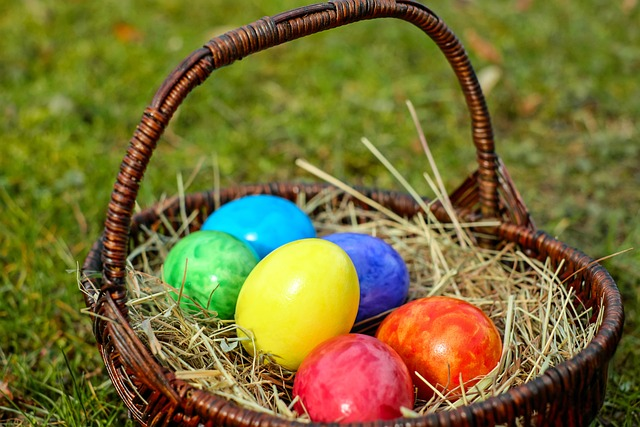

Galeria de Fotos
   



Com visitação gratuita, a decoração intitulada de Fazenda do Sr. Coelho, conta com tradicional casa, decorada com os itens que ele mais gosta como seu armário de guloseimas, os bolos e sua cadeira de balanço para descanso. A Fazenda, abriga ainda a villa de toquinhas, onde os amigos do sr. Coelho ficam, o Moinho as arvores coloridas, o bosque e o deleite do sr Coelho, a sua plantação de Girassóis, onde os visitantes poderão tirar suas fotos e guardar de recordação deste lugar especial. O animal símbolo da Páscoa pode ser visto de forma lúdica em vários formatos e tamanhos, a exemplo do coelho fazendeiro, coelho musgo, coelho de grama entre outros. Um jardim decorado com cenouras, coelhos, cogumelos, carrinhos de mão e tocas e o que não poderia faltar, a figura do Ovo de Pascoa, em vários tamanhos!!


Quinta - 30 de março: das 17h às 21h. Encontro com os personagens
Terça - 4 de abril: das 17h às 21h. A Coelhinha Desobediente - Teatro com o grupo teatral Néia & Nando
Quarta - 5 de abril de março: às 18h30 Teatro com o grupo teatral Néia & NandoSinopse: Em uma linda floresta, Dona Coelha tinha uma família muito especial, a ela foi passada a receita da tataravó de receita dos ovos da páscoa. Pirimpimpim era muito desobediente e na semana da páscoa, onde a família era responsável pela entrega dos ovos na floresta, leva uma queda e esquece a receita. A família tem pressa de entregar, senão o Seu Galo colecionador de ovos vai acabar com eles.